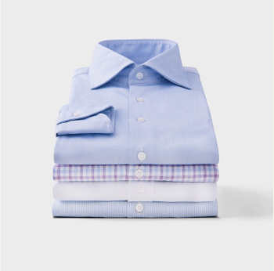
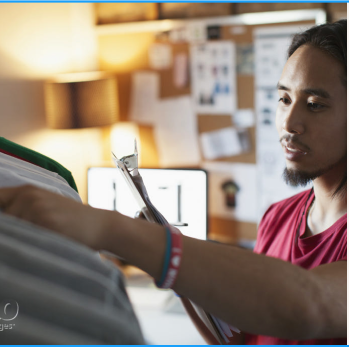
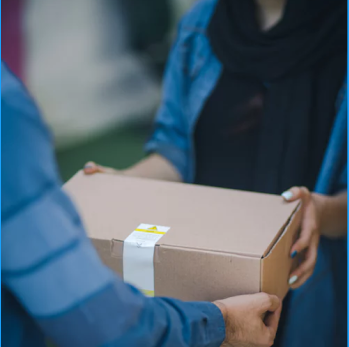

8 неделя
--------non-iron обработка:
Процессы, которым подвергается ткань на этом этапе производства – это именно то, что придает нашему продукту качество non-iron. Каждая рубашка SmartWhite на этом этапе аккуратно подвешивается, обрабатывается и высушивается в специально


10 неделя
--------контроль качества:
Инспекторы отдела контроля качества внимательно исследуют каждую рубашку на наличие дефектов. После серии тестов продукт, прошедший проверку, отправляется на упаковку и отправку.
12 неделя
--------упаковка и отправка:
Целая команда работников трудится над сборкой красивых коробок, которые мы разработали специально для рубашек SmartWhite. Каждый наш продукт бережно упаковывается, маркируется адресом и отправляется к нашему партнеру, отвечающему за доставку заказа к вашей двери.

Получение заказа
Мы надеемся, что вы полюбите рубашку SmartWhite так же, как и мы. Мы потратили два года на поиски лучших материалов и фабрик. Мы создали собственную бизнес-модель, что позволяет нам устанавливать честную цену на наш продукт. Мы гордимся полученным результатом. Рубашка SmartWhite превзошла наши ожидания по качеству, и мы надеемся, что вы почувствуете то же самое.